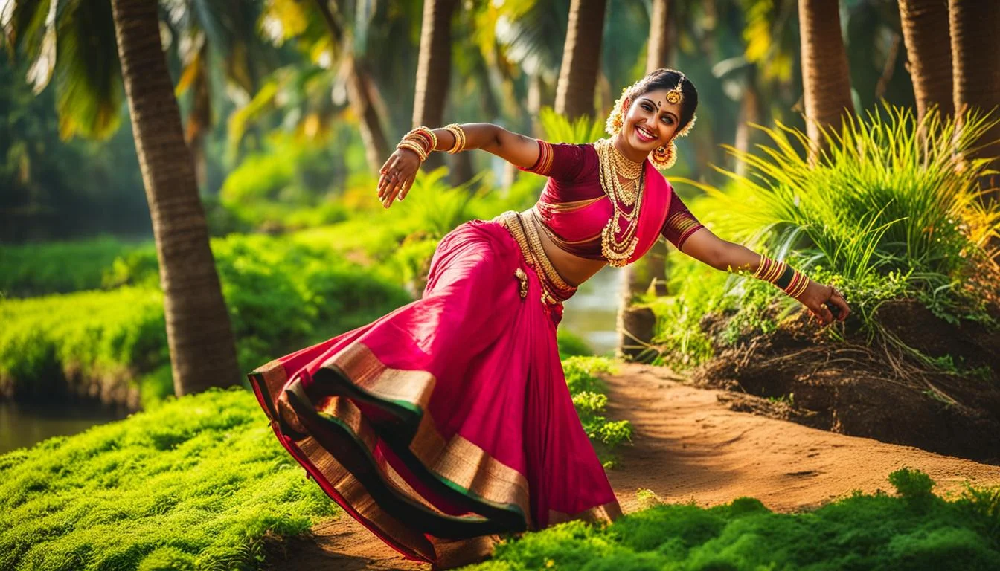

Welcome to Kerala!

Kerala, located on the southwestern coast of India, is renowned for its lush landscapes, rich cultural heritage,
and vibrant traditions. Known as "God's Own Country," Kerala's culture is a unique blend of ancient customs,
classical arts, and communal harmony, reflecting its diverse history and natural beauty.
Festivals are an integral part of Kerala's cultural life. Onam, the most prominent festival, is a harvest
celebration marked by elaborate feasts, traditional dances, boat races, and the creation of floral arrangements
called pookalams. Vishu, the Malayali New Year, is celebrated with rituals, fireworks, and the preparation of a
special meal called sadya. The state also observes Christmas and Eid with great enthusiasm, reflecting its
religious diversity and spirit of unity.
Kerala’s cuisine is famous for its rich flavors and use of fresh ingredients. Rice and coconut are staples in the
cuisine, and dishes often feature a blend of spices and herbs. Popular dishes include Sambar (lentil-based
vegetable stew), Kerala Parotta (flaky bread), and Appam (rice pancake). Seafood is a significant part of the
diet, with dishes like Meen Curry (fish curry) and Karimeen Pollichathu (pearl spot fish). The cuisine also
includes a variety of vegetarian dishes, showcasing the state's culinary diversity.
Music and dance are integral to Kerala’s cultural heritage. Kathakali, a classical dance-drama known for its
elaborate costumes and expressive gestures, is a highlight of Kerala’s artistic traditions. Mohiniyattam, a
graceful classical dance, and Theyyam, a ritualistic performance art, are other significant forms. Traditional
music, including the percussion-based Chenda Melam and the classical Carnatic music, are vital aspects of Kerala’s
cultural expression.
Kerala's architectural heritage includes splendid temples, churches, and mosques. The Padmanabhaswamy Temple in
Thiruvananthapuram, known for its intricate architecture and wealth, is a major religious site. The Paradesi
Synagogue in Kochi, one of the oldest active synagogues, and the St. Francis Church, where Vasco da Gama was
originally buried, are significant landmarks. These structures reflect Kerala’s historical and religious
diversity.
Handicrafts in Kerala are celebrated for their craftsmanship and traditional artistry. Coir products made from
coconut fiber, Aranmula Kannadi (metal mirrors), and Kasavu sarees with their distinctive gold borders are notable
crafts. The state is also known for its elaborate mural paintings and traditional boat-building techniques,
showcasing the skills and creativity of its artisans.
Natural beauty is a defining feature of Kerala, with its backwaters, beaches, and hill stations attracting
tourists from around the world. The serene backwaters of Alleppey and Kumarakom, the pristine beaches of Kovalam
and Varkala, and the lush hill stations of Munnar and Wayanad offer picturesque settings and unique experiences.
Overall, Kerala’s culture is a harmonious blend of tradition, natural beauty, and artistic expression. It offers
visitors a rich cultural experience, from its vibrant festivals and flavorful cuisine to its classical arts and
stunning landscapes. Kerala's warm hospitality and diverse heritage make it a captivating destination for
travelers and culture enthusiasts alike.